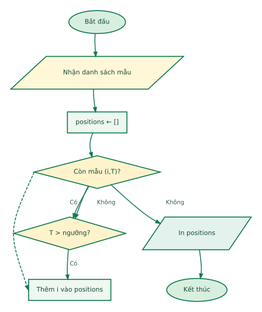

Khóa học / Mô-đun 2 / Bài 07
01 Mục tiêu và kiến thức tiên quyết
- Phân biệt list khả biến và tuple bất biến.
- Duyệt danh sách bằng enumerate, tìm vị trí các mẫu vượt ngưỡng.
- Kiểm tra chỉ số, trường hợp rỗng và dữ liệu lặp.
Kiến thức tiên quyết: bài trước, kiến thức lập trình tương ứng.
02 Tình huống kỹ thuật
Một nhóm phép đo nhiệt độ có thể được lưu dưới dạng danh sách để cập nhật khi có dữ liệu mới. Một cặp thông số cấu hình cố định có thể biểu diễn bằng tuple.
Danh sách đo [25.1, 31.0, 29.5, 31.0] °C và ngưỡng 30 °C.
Danh sách vị trí (bắt đầu từ 0) của mẫu vượt ngưỡng: [1,3].
03 Kiến thức và thuật ngữ cốt lõi
Danh sách list
list bảo toàn thứ tự phần tử, có thể thêm bằng append() và sửa bằng chỉ số. Việc gán danh sách mới không đồng nghĩa sao chép sâu từng phần tử.
Tuple
tuple bảo toàn thứ tự nhưng không cho gán lại phần tử trực tiếp. Tuple có thể chứa đối tượng khả biến; vì vậy nói “mọi dữ liệu bên trong luôn không đổi” là không chính xác.
Chỉ số và cắt lát
Chỉ số bắt đầu từ 0, chỉ số âm truy cập từ cuối; thao tác [a:b] lấy đến trước b. Kiểm thử cần phát hiện IndexError khi truy cập vượt giới hạn.
enumerate
enumerate(sequence) trả cặp (chỉ số, giá trị) khi duyệt. Cách này rõ ràng hơn tự tăng một biến đếm và giảm lỗi lệch chỉ số.
04 Xây dựng và kiểm tra thuật toán
Trước khi xem chương trình, hãy đọc dữ liệu đầu vào, chọn điều kiện rẽ nhánh hoặc lặp, rồi dự đoán kết quả. Mã giả mô tả ý nghĩa thuật toán; không phải cú pháp Python thực thi được.

Mã giả
Lần vết các bước phân tích
Đây là lần vết các dòng mã giả, không phải trình thông dịch Python. Tự kiểm tra nhánh điều kiện bằng bảng ca kiểm thử ở mục 07.
05 Chương trình Python đã kiểm tra
Đọc mã, dự đoán kết quả và chạy tệp bai_07.py trong thư mục code. Các mã bài 9 trở lên có thể cần dữ liệu đi kèm từ thư mục data.
nhiet_do_c = [25.1, 31.0, 29.5, 31.0]
nguong_c = 30.0
chi_so_vuot = []
for i, gia_tri in enumerate(nhiet_do_c):
if gia_tri > nguong_c:
chi_so_vuot.append(i)
nguong_cauhinh = (20.0, 30.0) # tuple 2 nguong minh hoa
print("Vi tri vuot:", chi_so_vuot)
print("Cau hinh:", nguong_cauhinh)
06 Thử nghiệm tham số có hướng dẫn
Thay đổi đầu vào để kiểm tra trực giác và đối chiếu với kết quả dự đoán. Trình khám phá này được lập trình lại bằng JavaScript theo bài toán minh họa, không phải kết quả chạy mã Python.
07 Thực hành và kiểm thử
Thực hiện các nhiệm vụ theo thứ tự từ có hướng dẫn đến độc lập; ghi lại kết quả thực tế của chương trình và so sánh với kết quả kỳ vọng.
- Sử dụng slicing để lấy hai mẫu đầu và hai mẫu cuối.
- Viết hàm nhận list và trả các vị trí vượt ngưỡng.
- Giải thích vì sao không thể viết nguong_cauhinh[0] = 15.
Bảng kiểm thử bắt buộc
| Ca kiểm thử | Dữ liệu/điều kiện | Kết quả kỳ vọng |
|---|---|---|
| Có mẫu lặp | 31.0 xuất hiện hai lần | Chỉ số [1,3] |
| Không vượt | [20,22] | Danh sách [] |
| Rỗng | [] | Kết quả [] |
| Bằng ngưỡng | [30] | Không tính vượt |
08 Vận dụng vào chuyên ngành
Tìm chỉ số những phút có nhiệt độ buồng lạnh trên ngưỡng quan sát.
Tìm chỉ số mẫu tốc độ mô phỏng lớn hơn mức thiết lập.
09 Trắc nghiệm và phản hồi
Mỗi câu có bốn phương án A/B/C/D. Chọn một phương án cho mỗi câu rồi nhấn Chấm và giải thích để xem vì sao từng phương án đúng hoặc chưa phù hợp.
Rubric tham khảo (100 điểm)
| Thành phần | Điểm |
|---|---|
| Đặc tả dữ liệu, đơn vị, giả thiết | 20 |
| Mã giả, trình tự thuật toán | 20 |
| Mã Python và tổ chức hàm/dữ liệu | 25 |
| Kiểm thử, đối chiếu, phân tích sai số | 25 |
| Giải thích và đề xuất cải tiến | 10 |
10 Nhật ký học tập và đánh dấu tiến độ
Tiến độ và ghi chép chỉ lưu trong trình duyệt hiện tại; không đồng bộ với hệ thống điểm của trường.
11 Tài liệu tham khảo và nguồn
| Nguồn | Vai trò và phạm vi sử dụng |
|---|---|
| Pythonlearn-08-Lists.pptx | C. Severance, Python for Everybody — Chương 8, danh sách. |
| Pythonlearn-10-Tuples.pptx | C. Severance, Python for Everybody — Chương 10, tuple. |
| PythonCoban_UTEHY.pdf | N. V. Hậu và cộng sự, Python cơ bản — các bài nền tảng tương ứng. |
Học liệu mới được viết lại theo định hướng sư phạm. Không trích lại nguyên văn hoặc phân phối các slide/sách gốc trong gói website.